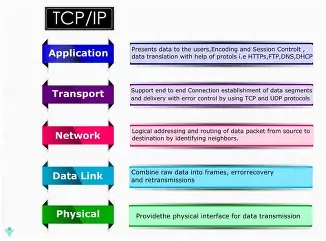

The Transmission Control Protocol (TCP) is one of the main protocols of the Internet protocol suite, providing reliable, ordered, and error-checked delivery of a stream of octets (bytes) between applications running on hosts communicating via an IP network. It originated in the initial network implementation in which it complemented the Internet Protocol (IP). Therefore, the entire suite is commonly referred to as TCP/IP.

TCP is connection-oriented, meaning that sender and receiver firstly need to establish a connection based on agreed parameters; they do this through a three-way handshake procedure